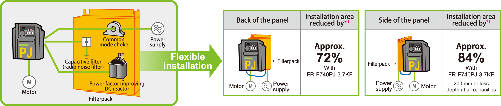
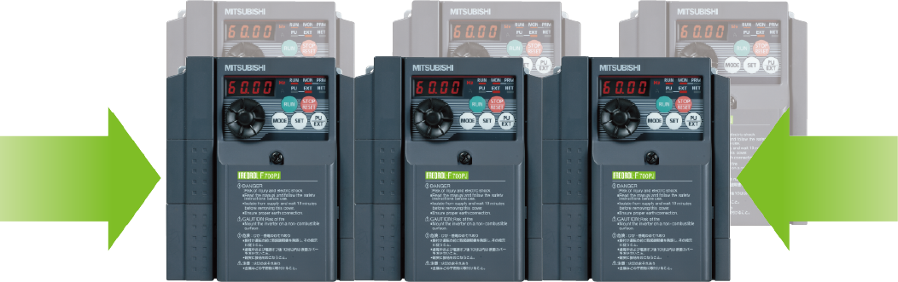

Inverters-FREQROL-F Series -FREQROL-F700PJ- Kawat dan Hemat Ruang

Beragam model Filterpack tersedia
- Reaktor DC yang meningkatkan faktor daya, common mode choke (filter derau saluran), dan filter kapasitif (filter derau radio) semuanya penting untuk aplikasi pendingin udara, dan semuanya disertakan dalam Filterpack. Model inverter Filterpack (FR-F7☐0PJ-☐F) juga tersedia. Pengkabelan opsional, yang sebelumnya diperlukan, kini tidak lagi diperlukan.
- Filterpack memungkinkan pemasangan yang fleksibel dan berbagai tata letak dalam penutup. Ruang yang lebih kecil diperlukan untuk pemasangan.

- *1Area yang diperlukan untuk pemasangan terpisah reaktor DC peningkat faktor daya, common mode choke (filter derau saluran), dan filter kapasitif (filter derau radio) dengan jarak bebas di sekelilingnya.
Hemat ruang dengan pemasangan berdampingan
- Pemasangan berdampingan dimungkinkan*2 dan membutuhkan lebih sedikit ruang.
Pilihan pemasangan rel DIN (FR-UDA☐☐) dapat dipasang.
- *1Jaga suhu udara sekitar inverter pada suhu maksimum 40 °C. Pemasangan berdampingan tidak tersedia untuk Filterpack.
